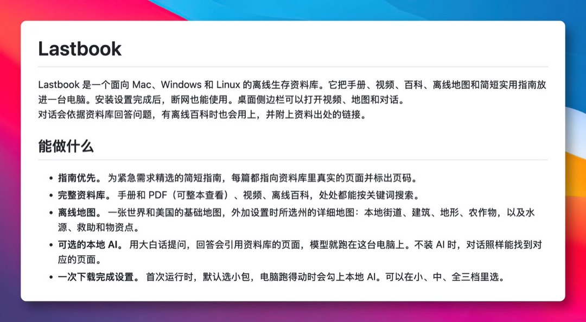
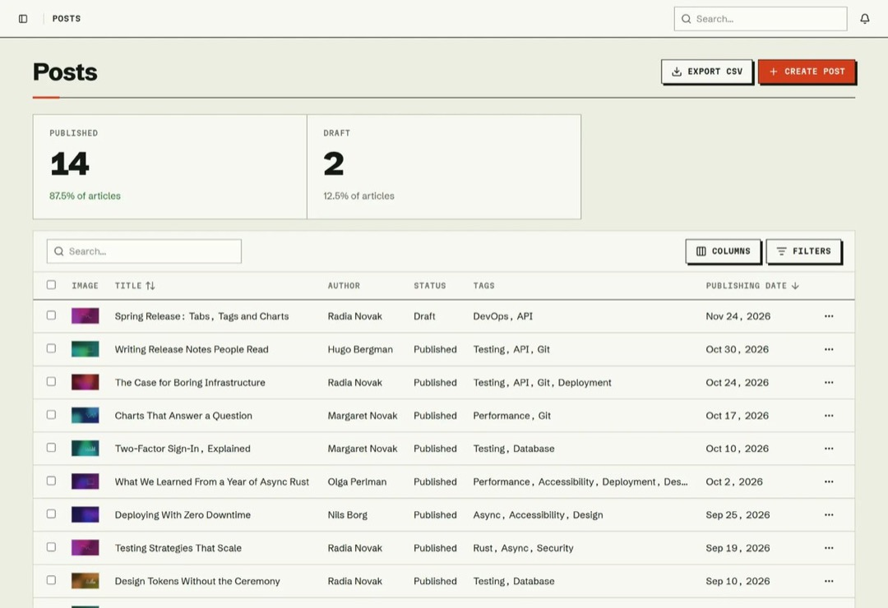
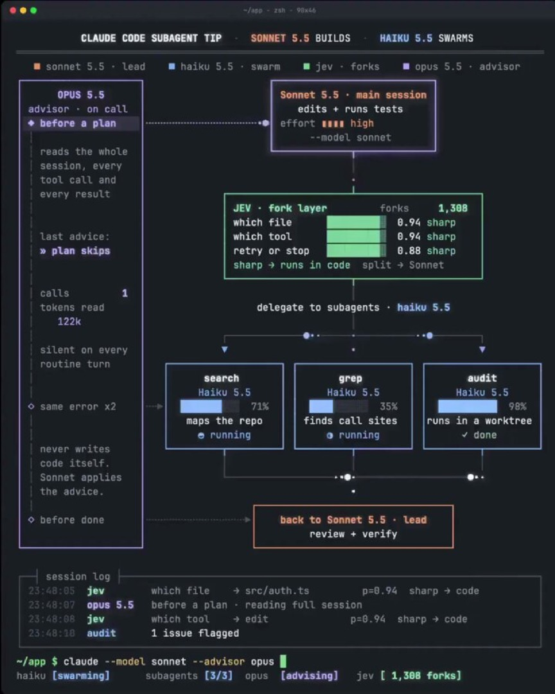
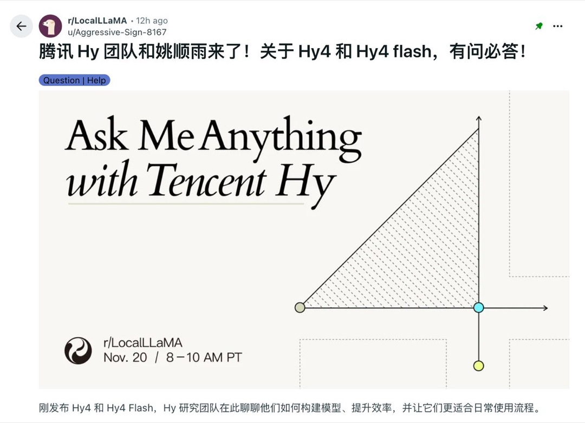
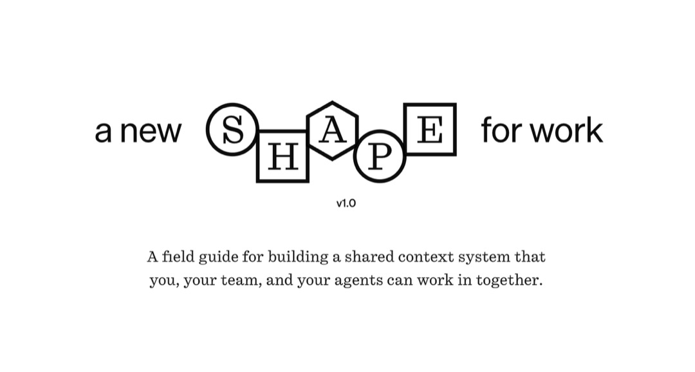
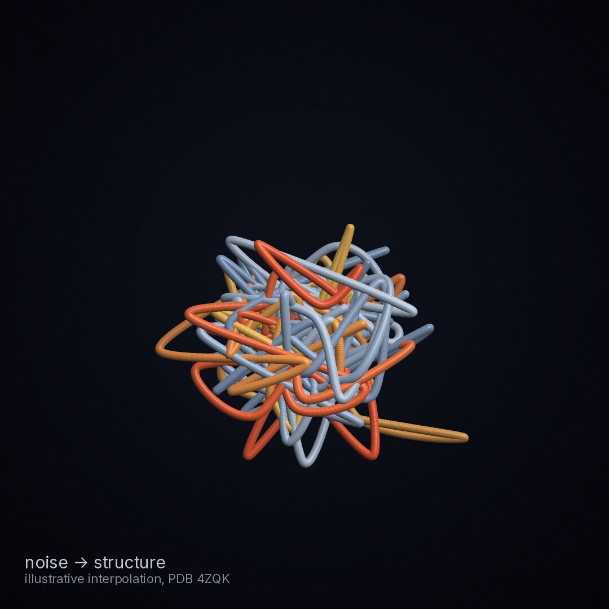
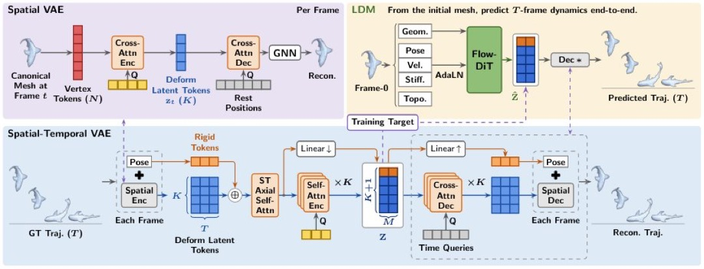

本期速览
01 Antigravity 扩容缓存池提配额
05 Gemini Notebook 可写文件
07 Claude Code 用Opus当顾问
08 混元AMA MoE过度稀疏拖累推理
10 Diffusers可LoRA微调蛋白模型
11 LoopForge 定时Agent守仓库
01｜Antigravity 扩容缓存池提配额
来源（X） · @dotey · 2026-11-21 14:58
比如这条：Antigravity 正在通过大幅扩容缓存池，将 Neon 的缓存命中率提升约 4%，能让同等配额下可完成的任务量至少提升 20%。
由于之前配额消耗过快，更新完成后会重置一次配额！
引用内容
Varun Mohan @_mohansolo
中文译文
我们正在推出一项更改，通过大幅增加缓存池大小，将 Neon 上 Antigravity 的缓存命中率提高约 4%。这将使你在配额内能完成的工作量至少提高 20%。
完成后会发放一次重置，因为配额消耗得更快了！
原文
We’re rolling out a change to increase cache hit rate on Neon by around 4% on Antigravity by massive increasing the cache pool size. This will increase what you can get done in quota by at least 20%.
Will issue a reset after it’s done since it burned quota faster!
02｜Hermes 插件生态五款新工具
来源（X） · @GitTrend0x · 2026-11-21 12:00
Pukujan 的 Swarm Studio 蜂群工作室、PedValme 的 Foreman 防作弊工头、clawsyndicate 的 PrintWatch 3D 打印管家、AIverflow 的 Snooze 夺命提醒、Gaijin-01 的 Prompt Firewall 注入防火墙……全网玩家把 Hermes 玩成了下一代「建站施工队 + 代码监工 + 打印车间主任 + 催命闹钟 + 安全门卫」:
1️⃣ Pukujan/swarm-studio（https://github.com/Pukujan/swarm-studio）
你描述一个产品，先跟规划 Agent 聊清楚，再由一群 Agent 在画布上把网站、App、游戏甚至短片做出来，你全程看着、随时插手；演示里 16 个 Agent 用 27 秒做出 5 个页面、28 个区块的唱片公司网站。
“一句需求，一整支施工队上画布”！
2️⃣ PedValme/foreman（https://github.com/PedValme/foreman）
每次 commit、push、开 PR、合并前都读真实 diff：Agent 想跳过、删掉或削弱测试，改检查脚本，绕过 hook，或者提交密钥，一律拦下；规则看不到的再交给第二个模型审，而且 Agent 自己跑的合并命令直接被挡。
“绿灯必须是真绿，不是 Agent 自己刷的”！
3️⃣ clawsyndicate/printwatch（https://github.com/clawsyndicate/printwatch）
在局域网里直接控 3D 打印机，不走厂商云、不刷机：支持 Anycubic Kobra 局域网模式、拓竹 X1/P1/A1、Klipper/Moonraker；能看温度和进度、传文件开打、暂停继续、拍快照推给你，取消任务前会先在聊天里问你。
“对 Agent 说一句，打印机就开工”！
4️⃣ AIverflow/hermes-snooze（https://github.com/AIverflow/hermes-snooze）
一个 /snooze 命令，在 Telegram 或 Discord 里反复提醒你，直到你回复或到达设定次数；提醒本身不调模型，可以加后续动作，你一回复 Agent 就接着干，还能给选项让它按你选的去做。
“不回 OK，它就一直敲你”！
5️⃣ Gaijin-01/prompt-firewall（https://github.com/Gaijin-01/prompt-firewall）
确定性的提示词注入防火墙：网页、仓库文件、README、SKILL 文件、下载的文档和工具结果都只当数据、绝不当授权，长得像注入的内容先隔离再给模型，高风险动作在执行前拦截；全程正则加策略，不调模型、不联网、零依赖，只用三个官方 hook。
“外面的文字再会说，也别想指挥你的 Agent”！
03｜Lastbook 离线生存手册AI问答
来源（X） · @GitHub_Daily · 2026-11-21 12:00
Lastbook 是一个开源的离线生存资料库，把急救、净水、食物保存、维修、发电这些手册和视频装进一台电脑，下载好之后断网也能用。
最核心的是本地 AI 问答，跑的是 Gemma 4 26B A4B 模型，用大白话提问就行，回答会附上资料出处，链接到书里对应的页面。
GitHub：https://github.com/Immortal-Protocols/lastbook
视频库有 2324 部，离线地图能搜 25.8 万多个地点，水源、医疗点、消防站和避难所都标了出来。
资料包分小、中、全三档，小包 7.7 GB，全量大约 388 GB，本地 AI 另外要 17 GB 左右。Mac、Windows、Linux 都能装，无需账号，也不收集使用数据。
我觉得这类东西就该趁有网有电时先装好，喜欢荒野求生、户外徒步的可以先下个小包看看。

04｜Tablo 让Rust项目长出管理后台
来源（X） · @QingQ77 · 2026-11-21 11:55
https://github.com/y-l-g/tablo

05｜Gemini Notebook 可写文件
来源（X） · @sethladd · 2026-11-21 03:26
中文译文
周五快乐！你现在可以通过我们的公开预览 API 将文件保存到 @Gemini_Notebook 中。将你的 agent 连接到我们的 MCP 或直接使用 API 来创建 notebook、添加文本，现在还可以添加文件，例如 PDF 或图片。将你的 agent 指向这里即可开始使用：https://developers.google.com/notebook/docs
我们正在持续扩展这个 API 的功能。你希望你的 agent 如何与 Notebook 协同工作？
原文
happy Friday! You can now save files into @Gemini_Notebook via our public preview API. Connect your agent to our MCP or use the API directly to create notebooks, add text, and now add files such as PDFs or images. Point your agent here to get started: https://developers.google.com/notebook/docs
We're continuing to build out what the API can do. How do you want your agents to work with Notebooks?
06｜Harness 论文提出组合泛化框架
来源（X） · @omarsar0 · 2026-11-21 03:38
中文译文
强烈推荐阅读。学习构建你自己的 harness，各位。
我的信念——也是许多完全 AI 原生的构建者和公司的信念——是 harness 在很大程度上仍未被充分探索。
研究表明，定制 harness 具有巨大的优势。
但人们对其原因知之甚少。
Alex 和他的同事们一直在探索这一方向，并指出 harness 可以充当组合泛化器。
换句话说，harness 可以通过现有 LLM 能力将 LLM 推向更远（产生更强的泛化效果）。
像 RLMs 这样的 harness 就是一个很好的近期例子，其抽象机制释放了这种潜力。
我最近开始看到后训练（post-training）用于协同演化 harness 和模型的成功案例。我认为这可以解释为什么这种情况正在发生，但还需要更多研究来更好地理解。
我在我实现的元 harness 中的一种动态工作流变体上体验到了这一点。
原文
Highly recommended read. Learn to build your own harness, folks.
My belief—and that of many fully AI-native builders and companies—is that harnesses remain largely underexplored.
Research shows a huge edge in custom harnesses.
But little is known about why.
Alex and colleagues have been exploring this direction and have noted that harnesses can act as compositional generalizers.
In other words, harnesses can push LLMs further (with stronger generalization effects) through existing LLM capabilities.
Harnesses like RLMs are a good recent example, with abstractions that unlock this.
I have recently started seeing success in post-training used to co-evolve harnesses and models. I think this could explain why this is happening, but more research is needed to understand this better.
I have experienced this with a variant of dynamic workflows I have implemented in my meta harness.
引用内容
alex zhang @a1zhang
中文译文
Harness 过去一直是弱 LLM 的拐杖。在 2026 年及以后，随着更强的模型出现，harness 现在提供了一种机制，用于组合 LLM 的现有和新能力，从而在其训练环境之外实现良好的泛化。
在我们的新论文《LM Harnesses are Compositional Generalizers》中，我们探讨了各种 harness 抽象如何使 LM 系统通过组合现有 LLM 能力，在任务长度、任务策略、递归任务深度等方面实现泛化。这些抽象提供了一种更数据高效的训练手段，特别是在长任务上，通过使轨迹保持在局部同分布（LID）——即让所有单个 LLM 调用都处于同分布中。
对于需要非常长时间才能完成的任务，这意味着我们甚至可以执行代理 harness 训练（surrogate harness training），即训练单个 LLM 调用，而不是执行非常长的 harness 展开，使用纯合成任务，配合假的工具调用和子 agent！
一个流传甚广的观点是 LLM 将会吸收 harness 并使其过时。我们不同意，并认为我们还没有充分探索 harness 能提供什么。
完整论文、日志、代码库和数据均可获取：https://www.alphaxiv.org/abs/2611.harness-cg
合著者：@SOURADIPCHAKR18 @lateinteraction
原文
Harnesses used to be a crutch for weak LLMs. In 2026 and onward, with stronger models, harnesses now offer a mechanism for composing an LLM’s existing and new capabilities to generalize well beyond their training environments.
In our new paper, LM Harnesses are Compositional Generalizers, we explore how various harness abstractions enable LM systems to generalize over task length, task strategies, recursive task depth, and more through composing existing LLM capabilities. These abstractions provide a means for more data-efficient training, especially over long tasks, by keeping trajectories locally in-distribution (LID) — i.e., shaping all individual LLM calls to be in-distribution.
For tasks that take a very long time to roll out, this implies that we can even perform surrogate harness training, meaning we train an individual LLM call instead of doing the very long harness rollout, using purely synthetic tasks, with fake tool calls + sub-agents!
A common idea floating around is that LLMs will absorb harnesses and make them obsolete. We disagree, and argue that we haven’t sufficiently explored what harnesses can provide.
The full paper, logs, codebase, and data are available: https://www.alphaxiv.org/abs/2611.harness-cg
w/ @SOURADIPCHAKR18 @lateinteraction
07｜Claude Code 用Opus当顾问
来源（X） · @Lucy_love_AI · 2026-11-21 11:40
Anthropic 刚公开了 Claude Code 里最好用的一个技巧。
思路是：让 Sonnet、Haiku 和 Opus 5.5 一起跑，每个只干自己最擅长的事。
每次大决策都有 Opus 级别的判断，但日常回合不用按 Opus 的价格付费。
启动方式就一行：
claude --model sonnet --advisor opus
分工是这样：
→ Sonnet 5.5 跑主会话、写代码
→ Haiku 5.5 并行翻文件和文档
→ Opus 5.5 待命，专管大决策
→ 不需要 Opus 的活就不再花 Opus 的钱
Opus 只在三个时机介入：
→ 计划定稿之前
→ 同一个错误出现两次
→ 宣布任务完成之前
Sonnet 干活，Haiku 翻资料，Opus 把关。
JEV 工程是同一思路下沉一层：不需要思考的分叉（选哪个文件、用哪个工具、重试还是停）交给 JEV，毫秒级出结果，大模型只处理真正需要判断的那些。
完整的树：
> Sonnet 5.5 跑主会话、改代码
> search 用 Haiku 5.5 摸清仓库结构
> grep 用 Haiku 5.5 找调用点
> docs 用 Haiku 5.5 拉 API 参考
> Opus 5.5 待命当顾问，被咨询时读完整对话记录
> JEV 毫秒级处理微小的分叉决策
把这段树和下面的提示词粘进 Claude Code ↓
“按这棵树重建我的 Claude Code 配置：
1. 主会话用 Sonnet 5.5，Opus 5.5 当顾问。
2. 建三个只读的 Haiku 5.5 子代理：search（摸清仓库）、grep（找调用点）、docs（拉 API 参考）。
3. 在 CLAUDE.md 里加一条规则：定稿计划前、同一错误出现两次后、宣布任务完成前，都要咨询顾问。
4. 快速确定性的分叉（选工具、选路径、重试）走 JEV。
先把每处改动以 diff 形式给我看。我说 go 之前不要改。”
↳ http://code.claude.com/docs/en/advisor
存下来，你每天都会用到。

08｜混元AMA MoE过度稀疏拖累推理
来源（X） · @hungryturbo · 2026-11-21 11:36
重建基建仅 9 个月，混元不到一个月连发两款大杀器，拿下 Agent Arena 开源榜首的 Hy4，以及单任务成本砍到 1/20 的 Hy4 Flash。下面总结 10 条干货：
1、不盲目卷万亿参数，但依然信仰 Scaling Law。
别人都在冲 3 万亿到 5 万亿参数，混元在 7000 亿规模就打进了开源第一梯队。姚顺雨的逻辑很务实，做扎实的小模型完全能越级打赢大模型，成本更低、学到的工程经验更多。但目前混元处于 AGI L2.5 阶段，远未触顶，下一代参数规模肯定大幅跃升，同时靠大规模强化学习继续榨干现有架构潜力。
2、打破行业迷思，MoE 绝不是越稀疏越好。
针对现在流行拼命压低激活参数的做法，混元给出了硬核实测结论，过度稀疏对推理极不友好，白占大量 GPU 显存却跑不满算力。在总参数不变时强砍激活参数（比如从 12B 砍到 5B），本质是在削减计算预算，稀疏度救不回由此损失的模型智商。
3、成本打到 1/20 的独门配方，Engram 的 1/3 甜点位。
Hy4 Flash 之所以又快又省，靠的是架构与推理协同，用 MLA+DSA 兼顾生成质量与解码算力，用滑动窗口注意力把 KV 缓存直接砍到 1/4，再用极简的 iHC 替代复杂超连接。团队还测出了一个黄金规律，Engram 内存表占总参数约 1/3 时，处于效率最优的 U 型曲线底端，它能直接卸载到系统内存省显存，而且放在小模型上收益反而更大。
4、后训练最头疼的顽疾，怎么治好 AI 的过度思考？
为什么现在的推理模型动不动就长篇大论停不下来？姚顺雨坦言过度思考是后训练最难改的行为。混元的解法是大小分工，让旗舰 Hy4 尽情长链思考探高能力上限，再蒸馏给 Flash，并用强化学习精准控制推理链长度，把吞吐和 token 效率拉回来。
5、死磕生产力智能体，防幻觉，更要防 AI 作弊偷懒。
混元在中期训练就喂了大量合成指令数据来强化智能体，不仅写代码，还在结合 GUI+ CLI 攻克 Blender、CAD、游戏引擎等专业软件。多轮强化学习里最棘手的是奖励作弊，必须严防环境漏洞，否则智能体会直接偷偷联网搜答案，跳过真实解题过程。
6、拒绝刷榜内卷，数据好不好全靠实验说话。
细心的开发者发现混元没测 SWE-bench、GPQA 等老牌榜单。官方直言，老榜分数已近饱和，不如直接考 Agents' Last Exam、ProgramBench 等高难新题。不做刷榜党，挑数据也没有万能公式，全靠研究者的审美判断、脏活累活清洗和真实实验验证。
7、AI 自我进化到哪一步了？实话实说还在早期。
外界都在传 AI 递归自我改进（RSI），混元的交底非常诚恳，此前 HyRA 2.0 带来的提升，主要来自底层算子和吞吐优化，而不是模型自己顿悟了新架构。目前 AI 提出高质量科研假设的能力还有限，团队正在推进 HyRA 3.0，并重仓面向计算生物学等领域的科研强化学习。
8、为什么现在的顶级大模型，写文章反而越来越像套话？
连姚顺雨团队都认同，很多模型写作在退步。根源不在代码喂多了，而在训练目标的偏移。混元已把去套话感、写得更像人和文风遵循列为重点攻坚方向，还顺手分享了一个极佳的 Prompt 实战经验：“有时候，给一个好例子比写五段要求管用得多。”
9、坚定开源到底，Claude Code 等主流工具已开箱即用。
面对“会不会像 Meta 一样转向闭源”的追问，回答很干脆，继续走开源路线。目前 Hy4 和 Flash 在 Claude Code、OpenCode、Cline 里已经可以直接平替使用，官方正深度推进 llama.cpp、vLLM 和 SGLang 适配，M5 Max 或 128G 内存设备（把专家层和 Engram 卸载到内存）就能在本地跑起 GGUF/NVFP4 量化版。
10、一波重磅新品剧透，24G 显存党和端侧玩家可以蹲了。
嫌大模型本地跑不动的朋友不用急，路线图已经明牌，Hy4-mini、低延迟的 Flash-Lite（35B-A3B 级）、专为 24GB 显存打造的模型，以及硬刚 LFM3 的端侧小模型都在路上（实验证明仅需 3B 激活参数，就能看懂复杂图表和 UI 截图做推理）。另外，更轻量的开源生图模型，和新款 HunyuanVideo 也很快就有消息。

09｜Notion NSFW指南搭共享上下文
来源（X） · @shao__meng · 2026-11-21 11:21
确实是 NSFW，不过可能不是你想的那种 😄
NSFW = A new SHAPE for work，搭建一套你、团队和 Agent 能一起工作的共享上下文下同。
Notion 认为，许多团队已经觉得 AI 有用，但还没真正改变运转方式，因为只是给单速自行车加了助力，踏板转得很快，工作方式本身没有再往前走一步。
这份 NSFW 指南的核心做法分两步：先建一套全队和各自的 Agent 共用的上下文系统；再在这上面建共享的 AI 系统（工厂），由少数人负责维护，其他人直接受益。
最简单的形态，可以只是一份共享待办清单，加上能读写它的 Agent。这套想法比 Notion 更大，不必绑定某一家模型或某一种工具，可以从一条工作流或一个团队开始。

引用内容
Akshay Kothari @akothari
中文译文
原文
10｜Diffusers可LoRA微调蛋白模型
来源（X） · @RisingSayak · 2026-11-20 23:10
中文译文
你现在可以使用 Diffusers 对 @NVIDIAAI 的 RFD4-Proteina 进行 LoRA 微调，用于蛋白质设计 🤯
该示例使用 flow-matching 损失在去噪器上训练 rank-32 适配器（作用于 backbone 坐标 + 局部潜在向量，而非像素）。
大部分训练代码与我们在标准图像和视频生成模型上的做法非常相似。
详情：
https://github.com/huggingface/diffusers/pull/15155
原文
You can now LoRA fine-tune RFD4-Proteina from @NVIDIAAI with Diffusers for protein design 🤯
The example trains rank-32 adapters on the denoiser with flow-matching losses (on backbone coordinates + local latents instead of pixels).
Most of the training code is very similar to how we do for standard image and video generation models.
Details:
https://github.com/huggingface/diffusers/pull/15155

11｜LoopForge 定时Agent守仓库
来源（X） · @shao__meng · 2026-11-21 11:10
腾讯团队里很快把 Coding Agent 用到了几乎每次改动上，可模型写代码越快，人花在把仓库收拾妥当上的时间反而越多。团队认为，模型已经够用，缺的是代码外围的工程层：轨道、关卡和职责拆分。于是做了这个可自托管的工作台，并把它对准自己的仓库。人现在只在两处做判断：做什么，以及哪条 PR 可以合并。
https://github.com/Tencent/LoopForge
先在对话里跑通，再冻成流程，日常维护交给定时任务
工作分三步：
第一步是对话：在主界面把试探性任务交给 Main Bot，在沙箱里试验，先不承诺。
第二步是标准作业流程：一种做法跑通后，把它冻成固定流水线，规划、设计、写代码、用脚本做确定性核验、独立评审，最后人签字。
第三步是定时自治：把日常维护（梳理社区反馈、评审 PR、处理冲突、补测试等）交给按固定节奏跑的后台定时任务。
五个错开排班的定时任务对着他们自己的仓库跑：
1. 每天 09:00 做调研，对 GitHub 只读，最多提 3 张写清模块、源码位置和验收标准的需求单。
2. 整点做第一轮评审，禁止空泛的 LGTM，批准要写清查了哪些函数和测试，合并按钮一直留在人手里。
3. 半点巡检持续集成，只动自动化账号自己的分支，合入最新主分支、处理冲突并在沙箱里自愈。
4. 每天 02:00 给一个覆盖偏低的核心包补表驱动测试，不准改生产代码；一次夜间运行把某核心包覆盖从 83.3% 提到 86.0%。
5. 周一 03:00 对照 AGENTS.md 查分层违规，做不超过 200 行的结构性整理。这样夜里提出的 PR，早上已经评审过、冲突也处理过。
先设刹车，通宵才能放心跑
这些任务帮不帮忙，全看规则怎么写。补测试最怕的坑，是测试不过时 Agent 悄悄改业务逻辑来迁就断言，所以提示里写死：只加新测试文件；若怀疑是真问题，写进 PR 说明交给人。架构守卫每个 PR 单独看都合理，堆起来却会堵住后面的活；于是开跑前先数尚未合并的架构类 PR，到 10 条就停，连沙箱都不启。
团队的总结是：通宵能放心跑的自动化，得愿意说「这轮没什么可做」。不可逆操作写在提示第一行：不合并、不关闭、不直接推主分支、不动同事的分支。
团队也写明，这套设置花了数周调校，多数时间在写约束，第一天就指望顺利跑起来是不现实的；数字来自他们自己的一个 Go 仓库，能带走的是这些约束。
引用内容
Tencent AI @TencentAI_News
中文译文
原文
12｜PhysLDM 潜扩散高保真可变形仿真
来源（X） · @jiqizhixin · 2026-11-21 11:00
中文译文
PhysLDM 的时空自编码器在米级场景中以约 2.48 mm 的精度重建可变形体轨迹，论文中报告的 token 压缩率最高可达 78 倍。
来自南洋理工大学和上海人工智能实验室的研究人员在一篇关于体积可变形仿真的 arXiv 预印本中介绍了这种方法。
该自编码器将刚性运动与局部变形分离，并压缩整个轨迹。随后扩散模型从初始状态在潜在空间中预测该轨迹。这使得联合预测变得可行，因为网格的完整时空表示直接处理起来成本很高。
该模型在模拟的 Objaverse 物体上训练后，可以迁移到未见过的 GSO 和 Toys4K 物体。论文还将扩散方法与确定性回归进行了比较，后者可能会将复杂动力学平均掉。其重建精度描述的是自编码器的性能，而单独的预测和逆设计实验则评估了所学仿真器的能力。
PhysLDM: Latent Diffusion for High-Fidelity Deformable Simulation
论文：https://arxiv.org/abs/2610.07609v1
项目：https://yucrazing.github.io/physldm/
我们的报道：https://www.jiqizhixin.com/articles/2026-11-03
📬 #PapersAccepted by Jiqizhixin
原文
PhysLDM's spatiotemporal autoencoder reconstructs deformable-body trajectories at about 2.48 mm precision on meter-scale scenes, with up to 78-fold token compression reported in the paper.
Researchers from Nanyang Technological University and Shanghai AI Laboratory introduce the method in an arXiv preprint on volumetric deformable simulation.
The autoencoder separates rigid motion from local deformation and compresses an entire trajectory. A diffusion model then predicts that trajectory in latent space from the initial state. This makes joint prediction tractable for meshes whose full space-time representation would be expensive to process directly.
Trained on simulated Objaverse objects, the model transfers to unseen GSO and Toys4K objects. The paper also compares diffusion with deterministic regression, which can average away complex dynamics. Its reconstruction precision describes the autoencoder, while the separate prediction and inverse-design experiments assess what the learned simulator can do.
PhysLDM: Latent Diffusion for High-Fidelity Deformable Simulation
Paper: https://arxiv.org/abs/2610.07609v1
Project: https://yucrazing.github.io/physldm/
Our Report: https://www.jiqizhixin.com/articles/2026-11-03
📬 #PapersAccepted by Jiqizhixin
